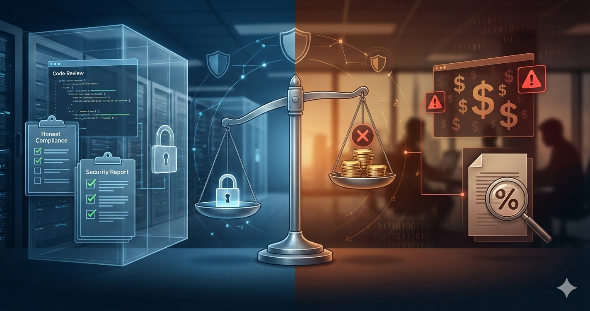

Quando os Interesses se Cruzam: Uma Reflexão sobre Ética em Auditoria de Sistemas
Prólogo: A Ligação que Mudou Tudo
Era uma segunda-feira tÃpica de dezembro quando meu telefone tocou. Do outro lado da linha, um amigo empresário — vamos chamá-lo de Ricardo — parecia visivelmente angustiado. Sua empresa, uma startup de médio porte no setor de serviços digitais, havia acabado de receber um relatório de auditoria de segurança que o deixou profundamente desconfortável.
"Olha, eu não sou técnico, mas algo não está fazendo sentido aqui," ele começou. "Contratei uma consultoria para avaliar nossa segurança digital. O relatório diz que estamos vulneráveis em pelo menos doze pontos crÃticos. Mas quando questionei sobre as soluções, o próprio auditor me ofereceu os serviços de implementação... da empresa dele. Isso é normal?"
A pergunta de Ricardo tocou em um dos temas mais delicados e pouco discutidos do setor de TI: conflitos de interesse em auditorias técnicas. O que começou como uma simples consulta entre amigos se transformou em uma investigação mais profunda sobre práticas questionáveis que, infelizmente, não são tão raras quanto deveriam ser.
CapÃtulo 1: O Cenário — Quando a Auditoria Vira Venda
A Promessa de Segurança
Ricardo havia contratado a consultoria através de uma indicação. O escopo era claro: realizar uma auditoria de segurança digital completa dos sistemas da empresa, incluindo infraestrutura web, APIs, polÃticas de acesso e conformidade com a LGPD. O prazo era de 15 dias úteis, e o investimento, R$ 8.500,00.
O auditor — vamos chamá-lo de Márcio — apresentou credenciais impressionantes: certificações em segurança da informação, experiência em empresas multinacionais, e um portfólio robusto. Tudo parecia profissional. Até que não pareceu mais.
Os Primeiros Sinais
Foi nesse momento que Ricardo me ligou.
CapÃtulo 2: A Análise — Desvendando o Jogo
O Relatório sob EscrutÃnio
Com a permissão de Ricardo, revisei o relatório de auditoria. O que encontrei foi revelador — e perturbador.
- Vulnerabilidades infladas: Problemas menores classificados como "crÃticos"
- Falta de contexto: Sem análise de impacto real no negócio especÃfico do cliente
- Soluções genéricas: Recomendações que beneficiavam fornecedores especÃficos (dos quais o auditor recebia comissão)
- Urgência artificial: Prazos extremamente curtos para implementação ("48 horas ou risco iminente")
- Conflito não divulgado: O auditor vendia tanto o diagnóstico quanto a cura
A Vulnerabilidade Real vs. A Vulnerabilidade Vendida
Vamos pegar um exemplo real do relatório (anonimizado):
Vulnerabilidade reportada por Márcio:
"CRÃTICO: Sistema operacional desatualizado em servidor de produção. Versão Windows Server 2019 (Build 17763) exposta a 127 CVEs conhecidas. Risco de invasão iminente. Recomendação: Upgrade imediato para Windows Server 2022 + serviços de monitoramento 24/7. Investimento estimado: R$ 18.000."
Parece assustador, não? Agora, a realidade técnica:
O servidor estava, de fato, no Windows Server 2019. Mas estava com todas as atualizações de segurança aplicadas (o relatório omitiu isso). Das 127 CVEs mencionadas, 124 já estavam corrigidas via patches. As 3 restantes eram de componentes não utilizados pelo sistema.
Solução adequada: Aplicar patches especÃficos para as 3 CVEs residuais (tarefa de 2 horas, custo zero além da manutenção já contratada). Upgrade para Server 2022 seria recomendado eventualmente por questões de ciclo de vida do produto, mas não era "crÃtico" nem "imediato".
Custo real vs. proposto: R$ 0 (já coberto) vs. R$ 18.000 (70% de margem para o consultor).
E assim era com 9 das 12 "vulnerabilidades crÃticas". Problemas reais? Sim. CrÃticos? Não. Necessitando de investimento imediato de R$ 35.000? Absolutamente não.
CapÃtulo 3: O Conflito — Ética vs. Ganho Pessoal
A Anatomia do Conflito de Interesses
Aqui está o problema fundamental: Márcio não estava sendo pago apenas para diagnosticar. Ele tinha um interesse financeiro direto em maximizar o número e a severidade dos problemas encontrados, porque isso aumentava a probabilidade de vender seus serviços de correção.
As Perguntas que Márcio Nunca Respondeu
Quando confrontado (de forma profissional) por Ricardo e por mim em uma reunião de esclarecimento, Márcio foi questionado sobre vários pontos:
- Por que não foi divulgado antecipadamente que ele venderia os serviços de correção?
Resposta: "É uma prática comum no mercado. Todo mundo faz assim." - Por que vulnerabilidades de baixa criticidade foram classificadas como crÃticas?
Resposta: "Segurança é algo sério. Prefiro pecar pelo excesso de cautela." - Por que as soluções propostas sempre envolviam produtos/serviços de parceiros comerciais dele?
Resposta: "São empresas que eu confio. Estou recomendando o melhor." - Por que o relatório não mencionou que 90% dos patches já estavam aplicados?
Resposta (após hesitação): "Meu foco foi nos riscos residuais."
As respostas foram tecnicamente verdadeiras, mas eticamente evasivas. E aà está o cerne da questão.
CapÃtulo 4: As Consequências — O Custo da Má-Fé
O Impacto Imediato
Ricardo decidiu não contratar Márcio para as correções. Em vez disso, pediu uma segunda opinião de outra consultoria (desta vez, com separação clara entre auditoria e implementação). O novo relatório confirmou nossas suspeitas:
- 3 vulnerabilidades reais de médio risco (investimento necessário: R$ 4.200)
- 2 vulnerabilidades reais de baixo risco (investimento opcional: R$ 1.800)
- 7 "vulnerabilidades" do relatório original eram exageros ou já estavam corrigidas
Economia total: R$ 29.000 — quase o valor da auditoria inicial multiplicado por 3.
O Impacto Reputacional
Mas a história não termina aqui. Ricardo, naturalmente indignado, compartilhou sua experiência em grupos de empresários. Márcio perdeu pelo menos 4 contratos confirmados nas semanas seguintes. Sua reputação no setor começou a deteriorar.
A empresa de Márcio enviou uma carta ameaçando processar Ricardo por "difamação". Ricardo, munido do parecer técnico da segunda consultoria, respondeu oferecendo discutir o caso em arbitragem técnica. Nunca mais ouviu falar deles.
O Impacto no Mercado
O caso de Ricardo não é isolado. Conversando com outros colegas da área, descobri padrões similares:
CapÃtulo 5: As Lições — Como se Proteger
Para Quem Contrata Auditorias
- Exija separação de funções: O auditor NÃO deve vender a solução. Se vender, isso deve ser divulgado antecipadamente e com valores fixos tabelados.
- Peça classificação de risco baseada em impacto real: Não aceite "tudo é crÃtico". Exija análise contextual do seu negócio.
- Solicite evidências técnicas: Prints, logs, testes reproduzÃveis. Não confie apenas em afirmações.
- Sempre busque segunda opinião: Especialmente em propostas acima de R$ 10.000.
- Verifique referências: Converse com clientes anteriores. Pergunte sobre transparência e honestidade.
- Documente tudo: E-mails, propostas, relatórios. Se algo parecer errado, você terá evidências.
- Desconfie de urgências artificiais: "Precisa ser feito em 48h ou você será hackeado" é quase sempre exagero.
Para Profissionais de TI e Consultores
- Sempre divulgue conflitos de interesse antecipadamente
- Seja transparente sobre o que você ganha com cada recomendação
- Classifique riscos com base em impacto real, não em potencial de venda
- Ofereça múltiplas soluções, incluindo opções de baixo custo
- Documente suas análises com evidências técnicas verificáveis
- Lembre-se: sua reputação é seu ativo mais valioso
CapÃtulo 6: A Reflexão — O Que Realmente Importa
Depois de toda essa narrativa, você pode estar se perguntando: "Mas então, auditorias são todas fraudulentas?" Absolutamente não. A grande maioria dos profissionais de segurança e consultoria opera com ética e transparência.
O problema não são as auditorias. O problema é a ausência de transparência sobre incentivos.
A Questão Fundamental
Quando alguém está te vendendo tanto o diagnóstico quanto a cura, você precisa se perguntar: essa pessoa está trabalhando para proteger meus interesses ou para maximizar os dela?
Em outras indústrias, isso é regulamentado. Auditores financeiros independentes não podem vender serviços de consultoria para empresas que auditam. Médicos que recomendam procedimentos não podem ter participação financeira nas clÃnicas que os realizam. Mas em TI, ainda estamos no "Velho Oeste".
O Caminho para Mudança
A solução não é regulamentação pesada — o setor de TI se move rápido demais para isso funcionar. A solução é cultura de transparência:
- Consultores que divulgam abertamente seus conflitos de interesse
- Empresas que exigem separação entre auditoria e implementação
- Profissionais que denunciam práticas antiéticas quando as veem
- Comunidades técnicas que promovem discussões abertas sobre ética
EpÃlogo: Seis Meses Depois
Conversei com Ricardo recentemente. Ele implementou as correções recomendadas pela segunda consultoria (custo final: R$ 5.400, incluindo melhorias não urgentes). Não houve incidentes de segurança. Seu sistema está mais robusto, e ele economizou R$ 29.600.
Mas o mais importante? Ele aprendeu a fazer as perguntas certas. E está compartilhando esse conhecimento com outros empresários.
Márcio? Ainda está no mercado, mas com uma carteira de clientes significativamente reduzida. A reputação, uma vez manchada, é difÃcil de recuperar.
Conclusão: A Revolução Silenciosa
Escrevi este artigo não para demonizar consultores ou criar paranoia em quem contrata serviços de TI. Escrevi porque acredito que transparência é a única defesa real contra má-fé.
Se você é um consultor lendo isso: considere tornar seus incentivos completamente transparentes. Sim, você pode perder alguns contratos a curto prazo. Mas ganhará algo muito mais valioso: confiança duradoura.
Se você é um empresário ou gestor de TI: faça as perguntas difÃceis. Exija evidências. Busque segundas opiniões. Sua empresa merece proteção real, não teatro de segurança.
E se você já passou por algo similar ao caso do Ricardo: você não está sozinho. Compartilhe sua experiência (com a devida confidencialidade). Cada relato nos aproxima de um mercado mais ético.
Nós da Cara Core nos comprometemos a operar sempre com transparência total sobre nossos incentivos e conflitos de interesse. Quando auditamos, só auditamos. Quando implementamos, apresentamos múltiplas soluções com justificativas técnicas detalhadas. E sempre documentamos nossas recomendações com evidências verificáveis.
Porque no final do dia, nossa reputação vale mais do que qualquer contrato individual.
Nota de Confidencialidade: Este artigo foi escrito com base em experiências reais do mercado brasileiro de TI, mas todos os detalhes identificáveis foram alterados para proteção dos envolvidos. Se você identificou situações similares em sua experiência, isso não é coincidência — é um padrão que precisa ser discutido abertamente.
Hashtags
Contato
- E-mail: suporte@caracore.com.br
- Site: www.caracore.com.br
- LinkedIn: Cara Core Informática
Conecte-se conosco no LinkedIn para mais conteúdos sobre ética em TI e boas práticas em consultoria!
Seguir no LinkedIn
Artigo publicado em 30 de dezembro de 2025
© 2025 Cara Core Informática. Todos os direitos reservados.